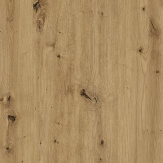
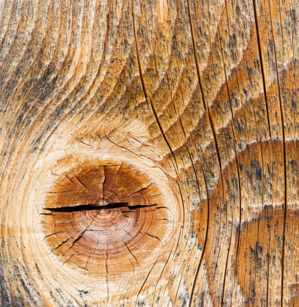
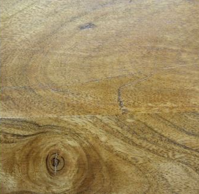
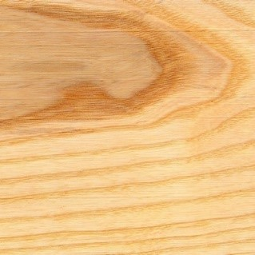
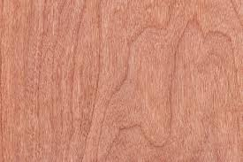
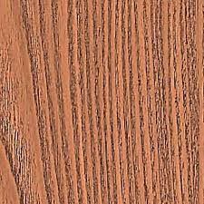

Főoldal
Rólunk
Faanyagok
Festékek
Elérhető faanyagaink

Tölgyfa:
Szívós, erős, kevésbé vetemedő, nagyon tartós keményfa
Alkalmas ajtó, bútor, faburkolat gyártására

Vörösfenyő:
Alkalmas kapuk, kerítések építésére, de remek hangszer-, és bútor alapanyag is egyben
Nagyon sokoldalú fa, tartóssága kiváló.

Akácfa:
Nehéz, kemény fája rugalmas, szívós, tartós
Széles körben felhasználható.

Kőrisfa:
Kemény, nehéz fája szívós, de nagyon könnyen megmunkálható.
Bútorgyártásban is kedvelt.

Cseresznyefa:
Közepesen kemény, ellenálló.
BVilágos,- vörösesbarna színével, erezetével különösen szép felületű fa, ezért a bútorgyártás kedvelt anyaga.

Szilfa:
Vörösesbarna, nehéz, kemény fája jól munkálható, faragható, pácolható.
Legjellemzőbb tulajdonsága, hogy vízzel telítődve rendkívül ellenálló.